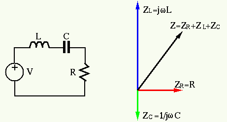
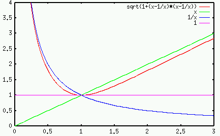
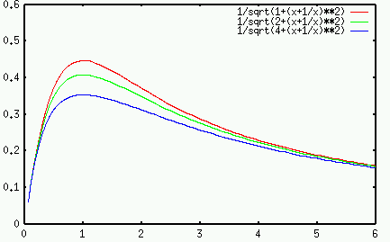
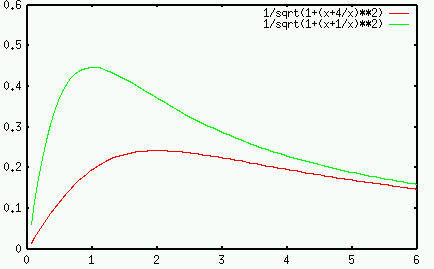
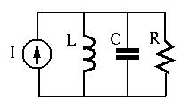

Series Resonance
Consider an RCL series circuit consists of a resistor  , an inductor
, an inductor  ,
and a capacitor
,
and a capacitor  connected in series to a voltage source. The overall
impedance of the three elements is
connected in series to a voltage source. The overall
impedance of the three elements is


In particular the resonant frequency is defined as

The quality factor of this RCL 2nd order system is defined as the ratio
of the magnitude of the inductor/capacitor impedance at the resonant frequency
 and the resistance:
and the resistance:


The RCL series circuit is a band-pass filter with the passing band centered
around the resonant frequency
 . The bandwidth is determined
by the quality factor
. The bandwidth is determined
by the quality factor  . The larger
. The larger  , the narrower the bandwidth.
, the narrower the bandwidth.
The impedance  as a function of
as a function of  is shown below:
is shown below:

and the admittances  for different
for different  (
( ) and
) and  are shown below:
are shown below:
 
The bandpass effect can be intuitively explained. When  is high,
the inductor's impedance
is high,
the inductor's impedance  is high, and when
is high, and when  is low,
the capacitor's impedance
is low,
the capacitor's impedance  is high. When
is high. When
 the overall impedance is the smallest. If the input is a voltage source
the overall impedance is the smallest. If the input is a voltage source
 , the current through the circuit will reach a maximum value when
, the current through the circuit will reach a maximum value when
 .
.
Example: In a series RLC circuit,  ,
,  and
and
 . The resonant frequency
. The resonant frequency  can be found to be
can be found to be
 .
The quality factor is
.
The quality factor is

Parallel Resonance: A GCL parallel circuit consists of a resistor
 , an inductor
, an inductor  and a capacitor
and a capacitor  connected in parallel to an
input current.
connected in parallel to an
input current.

In this case, it is much easier to consider the conductance of the
admittance  of each of the element. The overall admittance of
the three elements in parallel is
of each of the element. The overall admittance of
the three elements in parallel is


The Quality Factor  of the parallel resonance circuit is defined
as the ratio of the magnitude of the inductor/capacitor susceptance and
the conductance:
of the parallel resonance circuit is defined
as the ratio of the magnitude of the inductor/capacitor susceptance and
the conductance:


The parallel RCL circuit behaves like a bandstop filter which can be
intuitively understood. When  is high, the capacitor's impedance
is high, the capacitor's impedance
 is low, and when
is low, and when  is low, the inductor's impedance
is low, the inductor's impedance
 is low. When
is low. When
 the overall impedance is the
largest. However, if the input is a current source, the voltage across
the elements
the overall impedance is the
largest. However, if the input is a current source, the voltage across
the elements
 will reach a maximum value
when
will reach a maximum value
when
 .
.